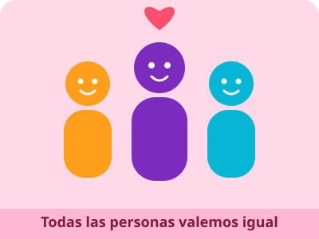

🏠 Inicio | 💚 Autocuidado | 🛡️ Prevención | 🌈 Derechos | 📚 Fuentes confiables
🌈 Derechos: todas las personas valemos igual

¿Qué son los derechos?
Los derechos son garantías que tenemos todas las personas por el hecho de existir. Nadie nos las da como un favor: el Estado, la familia y la sociedad deben respetarlas y protegerlas. Los niños, niñas y adolescentes tienen además derechos propios para su edad.
Convención sobre los Derechos del Niño
La ONU adoptó esta Convención el 20 de noviembre de 1989. Según UNICEF, reconoce a niños, niñas y adolescentes como personas con derechos propios, y Ecuador fue el primer país de América Latina en ratificarla. Se basa en cuatro principios:
- Interés superior: las decisiones que te afectan deben pensar primero en lo mejor para ti.
- Participación: tienes derecho a opinar y a ser escuchado.
- Supervivencia y desarrollo: tienes derecho a la vida, a la salud y a crecer en buenas condiciones.
- No discriminación: todos tenemos los mismos derechos.
Constitución del Ecuador
- Artículo 11: todas las personas somos iguales y gozamos de los mismos derechos, deberes y oportunidades; nadie puede ser discriminado.
- Artículo 44: el Estado, la sociedad y la familia deben promover el desarrollo integral de niñas, niños y adolescentes y asegurar el ejercicio pleno de sus derechos.
- Artículo 45: los niños, niñas y adolescentes gozan de los derechos comunes de todo ser humano y de los específicos de su edad, entre ellos la integridad física y psíquica.
Respeto y no discriminación
Tener derechos también significa respetar los de los demás. Nadie debe ser burlado, excluido o maltratado por su origen, su género, su apariencia, su condición económica, una discapacidad o sus creencias. Si ves o vives una situación de discriminación o violencia, no te quedes callado o callada: habla con un adulto de confianza o con el DECE de tu colegio, y en una emergencia llama al ECU 911.
Mira y aprende

Ilustración de la Convención sobre los Derechos del Niño. Imagen: Wikimedia Commons (autor y licencia en el enlace).
Video: «Cómo prevenir la violencia contra la niñez y adolescencia», UNICEF Guatemala, marzo de 2023 (4 minutos). Es de otro país, pero los consejos sirven para cualquier lugar. Abrir en YouTube si no se reproduce aquí.
Fuentes consultadas en esta página
- UNICEF Ecuador – Derechos de la infancia: una promesa que aún no se cumple para todos
- UNICEF Ecuador – Comité de los Derechos del Niño en Ecuador (los cuatro principios de la Convención)
- Constitución de la República del Ecuador 2008 (texto en PDF, OEA)
Página creada por Wilmer Parco · Proyecto Interdisciplinario